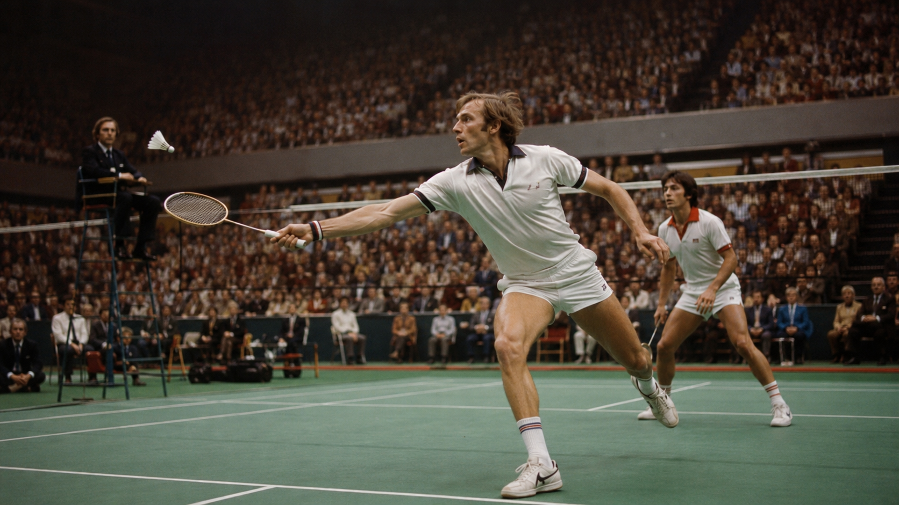
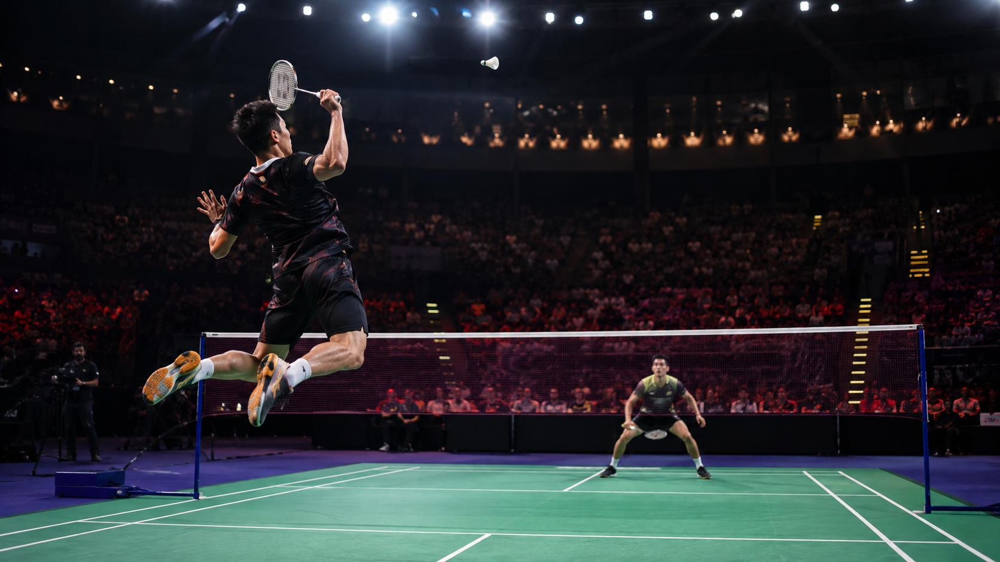

The BWF World Championships are probably the most important individual badminton tournament in the world, alongside the Olympic Games. Here is a fairly comprehensive overview of the competition.
BWF World Championships
General Information
- Official name: BWF World Championships
- Former name: IBF World Championships (until 2006)
- Organizer: Badminton World Federation (BWF)
- Founded: 1977
- Type: Individual World Championship
- Prestige: The highest-level individual tournament in the world, alongside the Olympic Games.
- Objective: To determine the world champions in each discipline.
History
The first World Championships were held in:
- 1977
- Malmö, Sweden
At that time, badminton was not yet an Olympic sport, so the World Championships were the most important event on the calendar.
Its frequency has changed several times:
1977–1983
Every 3 years:
- 1977
- 1980
- 1983
1985–2003
Every 2 years:
- 1985
- 1987
- 1989
- ...
Since 2005
The tournament has been held every year except in Olympic years, when the World Championships are not contested.
What Events Are Played?
Five disciplines are contested.
Men’s Singles
Men’s Singles (MS)
Women’s Singles
Women’s Singles (WS)
Men’s Doubles
Men’s Doubles (MD)
Women’s Doubles
Women’s Doubles (WD)
Mixed Doubles
Mixed Doubles (XD)
Who Can Participate?
Not just anyone can enter.
Qualification depends mainly on the BWF World Ranking.
Each national federation can enter players, but there are limits on the number of places available per country depending on ranking position. The highest-ranked players receive priority.

Competition System
It is a:
- Single-elimination tournament.
- No group stage.
- One defeat means elimination.
Each match is played as the best of three games.
Traditionally, games are played to 21 points, although the BWF approved a change to a 15-point scoring system for future competitions; its implementation depends on the corresponding official calendar.
Medals
The following medals are awarded:
- Gold.
- Silver.
- Two bronze medals.
There is no third-place match.
Both losing semifinalists receive bronze medals.
Ranking Points
It is one of the tournaments that awards the most ranking points, alongside the Olympic Games.
Currently:
Champion: 14,500 BWF points
It is one of the largest ranking-point rewards on the international calendar.
Prizes
In addition to the prize money, which varies from edition to edition, the real value of the tournament lies in:
- Becoming World Champion.
- Winning a World Championship medal.
- Earning a large number of ranking points.
- Historical prestige.
Difference from the Olympic Games
Many fans consider there to be two ultimate titles in badminton:
- Olympic Champion.
- World Champion.
The main differences are:
Olympic Games
- Held every 4 years.
- Much more limited qualification places.
- Greater media impact.
World Championships
- Held almost every year.
- More players participate.
- Considered the most important championship organized by the BWF.
Most Successful Countries
Historically, the dominant nations have been:
- China.
- Indonesia.
- South Korea.
- Denmark.
- Japan.
Titles have also been won by:
- Malaysia.
- India.
- Spain.
- Thailand.
- Singapore.
- England, among others.
Historical Curiosities
The First World Champion
The first World Championships were held in Sweden in 1977.
Denmark Dominated the First Edition
Denmark won:
- 3 gold medals.
- 1 silver medal.
- 1 bronze medal.
It was a historic performance.
China Did Not Compete in the First World Championships
Due to organizational issues at the time, China did not make its debut until the 1983 edition. From then on, it became one of badminton’s great powers.
Indonesia Made History as Host
In 1980, Indonesia had representatives in the finals of every discipline and won four titles.
There Is No Bronze-Medal Match
Unlike at the Olympic Games, both losing semifinalists receive a bronze medal.
It Is One of the Most High-Pressure Tournaments
Many players say that the World Championships create pressure similar to that of the Olympic Games, because a single defeat means immediate elimination.
Duration
The tournament generally lasts:
7 days
It includes:
- First round.
- Second round.
- Round of 16.
- Quarterfinals.
- Semifinals.
- Finals.

Draw Format
Singles
- Up to 64 players.
Doubles
- Up to 48 pairs.
The top seeds are distributed throughout the draw to avoid early meetings between them.
What Does the Champion Receive?
In addition to the gold medal:
- The official title of World Champion.
- Enormous international recognition.
- An increase in the world ranking.
- A prominent place in badminton history.
Notable Records
- First World Championships: Malmö, Sweden, 1977.
- Greatest historical powerhouse: China, with the highest accumulated number of titles and medals.
- Continents with medals: Asia, Europe, the Americas, and Oceania; Africa has not yet won a medal at the tournament.
Interesting Facts to Highlight
- The tournament was first held 15 years before badminton made its Olympic debut at Barcelona 1992.
- Both losing semifinalists receive bronze medals without playing an additional match.
- Winning the World Championships officially makes a player or pair a World Champion, a title they retain for life even after a later edition crowns new champions.